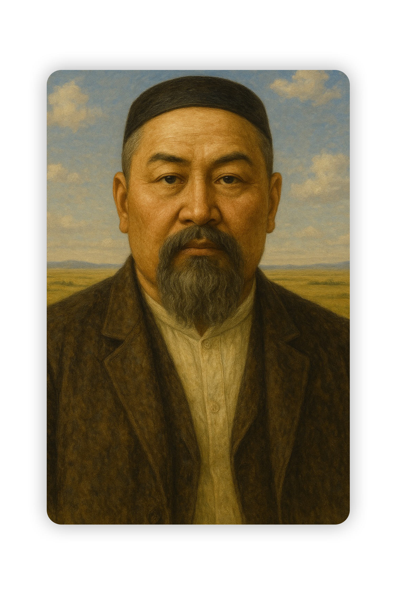

"Бас-басыңды тік ұстап, дүниеге ашық көзбен қара. Білім — надандық қараңғылығын сейілтетін шырақ."

Абай Құнанбайұлы (1845–1904) — қазақтың ұлы ақыны, ойшылы, ағартушысы, қазақ жазба әдебиетінің негізін қалаушылардың бірі. Ол қазіргі Абай облысы аумағында дүниеге келген. Абай шығармаларында білім, ғылым, адамгершілік, еңбекқорлық және әділдік тақырыптары кеңінен қозғалды. Оның өлеңдері мен «Қара сөздері» қазақ қоғамының дамуына, ұлттық сананың оянуына үлкен ықпал етті. Сонымен қатар ол орыс және әлем классиктерін қазақ тіліне аударып, мәдени байланысты нығайтты. Абай мұрасы — қазақ руханиятының асыл қазынасы және бүгінгі күнге дейін маңызын жоғалтпаған құндылық.
Абайдың «Қара сөздері» — ақынның философиялық ой-толғаулары мен тәрбиелік, ағартушылық көзқарастары жинақталған прозалық шығармалары. Барлығы 45 қара сөзден тұрады. Бұл еңбектерінде Абай білім мен ғылымның маңызын, адамгершілік, еңбекқорлық, әділдік, мінез-құлық, имандылық мәселелерін көтеріп, халықты рухани дамуға шақырады. «Қара сөздер» — қазақ әдебиетіндегі терең мағыналы, өнегелік мәні зор мұралардың бірі және бүгінгі қоғам үшін де өзектілігін сақтаған туынды.
Абай Құнанбайұлы Орта жүздегі Арғын тайпасының Тобықты руынан шыққан. Әкесі Құнанбай Өскенбайұлы өз заманындағы атақ даңқы алысқа кеткен адамдардың бірі болған. Патша өкіметі XIX ғасырдың ортасындағы бір сайлауда оны Қарқаралы ауданының аға сұлтандығына бекіткен. Абайдың анасы Ұлжан да Арғын тайпасынан, Қаракесек руының қызы. Абай бала кезден Өскенбайдың әулетінің Үлкен әжесі атанып кеткен Зере әжесінің қолында өсті, Өскенбайдың бәйбішесі Тоқбала анамыз (Зере) Найманның Матай болысының байы Бектемірдің қызы, Зере әжеміз Ибраһимді "Абай" деп еркелетіп атаған. Содан бері бұл есіммен Абай тарихқа енді.
Осындай текті ортадан шыққан Құнанбай мен Ұлжаннан туған төрт ұлдың бірі Абай жастайынан-ақ ерекше қабілетімен, ақылдылығымен көзге түседі. Балаға сыншы әкесі осы баласынан қатты үміт етеді. Әкесі оның зеректілігін байқағаннан кейін, 10 жасқа толған соң Семейдегі Ахмет Риза медресесіне береді. Медреседе төрт жыл оқығаннан кейін, оқудан шығарып алып, қасында ұстап, ел басқару ісіне баули бастайды. Әкесінің төңірегінде ел жақсыларымен араласып, өз халқының рухани мәдениет жүйелерімен жете танысады. Өзі билер үлгісінде шешен сөйлеуге төселеді. Ұтымды сөзімен, әділ билігімен елге танылып, аты шығады. Көп ұзамай, жетпісінші жылдардың бас кезінде Қоңыр Көкше дейтін елге болыс болады. Билікке араласып, біраз тәжірибе жинақтағаннан кейін, ол халық тұрмысындағы көлеңкелі жақтарға сәуле түсіруге күш салып бағады. Бірақ онысынан пәлендей көңіл тоятындай нәтиже шығара алмайды. Сондықтан халқына пайдалы деп тапқан істерін көркем сөзбен, әсіресе, өлеңмен насихаттамақ болады. Абай бір жағынан шығыс классиктері Низами, Сағди, Қожа Хафиз, Науаи, Физули, Жәми тағы басқаларды оқыса, екінші жағынан Александр Пушкин, Александр Герцен, Михаил Салтыков-Щедрин, Николай Некрасов, Михаил Лермонтов, Лев Толстой, Иван Крылов, Фёдор Достоевский, Иван Тургенев, Николай Чернышевский мұраларын оқып, терең таныс болған, Батыс әдебиетінен Гёте, Джордж Байрон сияқты ақындарды оқып, Дрепер, Спиноза, Спенсер, Льюис, Дарвин сынды ғалымдардың еңбектерін зерттейді.Абай Құнанбайұлы 1845 жылғы 23 тамызда қазіргі Семей облысының Шыңғыс тауларында, Қарқаралының аға сұлтаны Құнанбайдың төрт әйелінің бірі, екінші әйелі Ұлжаннан туған.
Ақынның арғы тегі Орта жүз Тобықты, Арғын ішіндегі Олжай батырдан басталады. Олжайдан Айдос, Қайдос, Жігітек есімді 3 ұрпақ тарайды. Бұлардың әрқайсысы кейін бір-бір рулы ел болып кеткен. Айдостың Айпара деген әйелінен: Ырғызбай, Көтібақ, Топай, Торғай, деген 4 ұл туады.Бұлардың әкесі момын, шаруа адамы, ал шешесі өткір тілді, өр мінезді әйел болған."Шынжыр балақ, шұбар төс Ырғызбайым, Тоқпақ жалды торайғыр Көтібағым, Әрі де кетпес, бері де кетпес Топайым, Сірә да оңбас торғайым..."
Ана айтқанындай, шынында, бұлардың ішінде Ырғызбай ортасынан оза шауып, ел басқарған. Ырғызбайдан Үркер, Мырзатай, Жортар, Өскенбай тарайды. Өскенбай шаруаға жайлы, билікке әділ кісі болғандықтан, “Ісің адал болса Өскенбайға бар,арам болса Ералыға бар” деген мәтел осыдан қалған. Өскенбайдың әйелі Зереден Құнанбай туады. Құнанбай — 4 әйел алған адам. Оның бәйбішесі Күңкеден – Кұдайберді, інісі Құттымұхамбетке айттырылып, қалыңдық кезінде жесір қалған соң өзі алған екінші әйелі: Ұлжаннан – Тәңірберді (Тәкежан), Ибраһим (Абай), Ысқақ, Оспан, үшінші әйелі Айғыздан – Халиулла, Ысмағұл туады. Қартайған шағында үйленген ең кіші әйелі Нұрғанымнан ұрпақ жоқ. Абайдың “ Атадан алтау, анадан төртеу едім дейтіні осыдан. Болашақ ақын сабырлы мінезімен, кең пейілімен ел анасы атанған “кәрі әжесі” Зеренің таусылмайтын мол қазынадай аңыз ертегілерін естіп, абысын-ажынға жайлы, мінезі көнтерлі, әзіл-қалжыңға шебер, жөн-жобаға жетік өз анасы Ұлжанның тәрбиесінде өсті. Абай әуелі ауылдағы Ғабитхан молдадан сауатын ашады да, 10 жасқа толған соң 3 жыл Семейдегі Ахмет Риза мешіт-медресесінде оқиды. Бұл медреседе араб, парсы тілдерінде, негізінен, дін сабағы жүргізілетін еді. Құрбыларынан анағұрлым зейінді бала оқуға бар ықыласымен беріліп, үздік шәкірт атанады. Ол енді дін оқуын ғана місе тұтпай, білімін өз бетінше жетілдіруге ұмтылады. Сөйтіп көптеген шығыс ақындарының шығармаларымен, араб, иран, шағатай (ескі өзбек) тілінде жазылған ертегі, дастан, қиссалармен танысады, Шығыстың Низами, Науаи, Сәғди, Қожа Хафиз, Физули сияқты ұлы ғұлама, классик ақындарына бауыр басады. Медресенің үшінші жылында Абай Семей қаласындағы “Приходская школа”-ға да қосымша түсіп, орысша сауатын аша бастайды. Бірақ бұл оқуын әрі жалғастыра алмай, небәрі 3 жылдан соң оның мұсылманша да, орысша да оқуы аяқталады. Абайдың басқа балалардан алымдылығын аңғарған Құнанбай оны елге шақырып алып, өз жанына ертіп, әкімшілдік-билік жұмыстарына араластырмақ болады. Сөйтіп 13 жастағы Абай ел ісіне араласады. Абай әке қасында болған жылдарда атқамінер би-болыстардың қулық-сұмдықтарын, қазақ даласына ыдырай бастаған феодрулық қатынастардың кереғар қайшылықтары, кіріптар еткен әлеуметтік теңсіздіктің зардаптарын, аштық пен жалаңаштықты, патриархалдық, кертартпа салт-сана, әдет-ғұрып зандарының залалдарынын айқын түсінді.Абай өлең жазуды 10 жасында («Кім екен деп келіп ем түйе қуған...») бастаған. Одан басқа ертеректе жазылған өлеңдері — «Йузи-рәушән», екіншісі — «Физули, Шәмси, Сәйхали». «Сап, сап, көңілім», «Шәріпке», «Абралыға», «Жақсылыққа», «Кең жайлау» өлеңдері 1870 — 80 жылдар аралығында жазылған. Ақындық қуатын танытқан үлкен шығармасы — «Қансонарда» 1882 ж. жазылған. Алайда жасы қырыққа келгеннен кейін ғана көркем әдебиетке шындап ықылас қойып, көзқарасы қалыптасып, сөз өнерінің халық санасына тигізер ықпалын түсінеді. Шығармалары үш жүйемен өрбиді: бірі — өз жанынан шығарған төл өлеңдері; екіншісі — ғақлия (немесе Абайдың қара сөздері) деп аталатын прозасы; үшіншісі — өзге тілдерден, әсіресе орысшадан аударған өлеңдері.
Абай өлеңдері түгел дерлік лирикадан құралады, поэма жанрына көп бой бұрмағаны байқалады. Қысқа өлеңдерінде табиғат бейнесін, адамдар портретін жасауға, ішкі-сыртқы қылық-қасиеттерін, мінез-бітімдерін айқын суреттермен көрсетуге өте шебер. Қай өлеңінен де қазақ жерінің, қазақтың ұлттық сипатының ерекшеліктері көрініп тұрады. Ислам діні тараған Шығыс елдерінің әдебиетімен жақсы танысу арқылы өзінің шеберлік — шалымын одан әрі шыңдайды. Шығыстың екі хикаясын «Масғұт» және «Ескендір» деген атпен өлеңге айналдырады. Ислам дініне өзінше сенген діни таным жайындағы философиялық көзқарастарын да өлеңмен жеткізеді. Абайдың дүниетанудағы көзқарасы XIX ғасырдың екінші жартысында Қазақ халқының экономикасы мен ой-пікірінің алға ұмтылу бағытында даму ықпалымен қалыптасты. Дүниетану жолында сары-орыстың төңкерісшіл демократтарының шығармаларын оқып, өз дәуірінің алдыңғы қатарлы ой-пікірін қорытып, басқаларға қазақ өміріндегі аса маңызды мәселелерді түсіндіруге қолданады. Дүниетану өңірінде екі қасиеттің — сезім мен қисынның , түйсік пен ақылдың қатынасын таразылайды. Сондықтан да: «Ақыл сенбей сенбеңіз, Бір іске кез келсеңіз» деп жазады. Кез келген халықтың тарих сахнасына шығуы — жүйеге бейімделген біртектес өмір салттың ғана нәтижесі емес, сонымен бірге қасиеттік деп саналатын- арман-аңсардың (идеал) да біртұтастығына айғақ. Олай болса Абай сынының тәлкегіне түскен еріншектік, дарақылық, жалқаулық, күншілдік, өтірікшілік, өсекшілдік, мақтаншақтық, жағымпаздық, жікшілдік сияқты қасиеттер қазақ баласының кейбірінің бойындағы туа біткен кемшілік емес, сол Абай өмір сүрген қоғамдағы саяси әлеуметтік қатынастардың нәтижесі екеніне ден қою қажет. Сонда, Абай бұрынғы бабаларымыздың бойынан көрген «кемшіліктерді» себеп ретінде емес, сол замандағы саяси-әлеуметтік қатынастардың салдары ретінде қарастыруға жол ашқан.Абай Құнанбайұлының көркемдік, әлеуметтік, гуманистік және дінге көзқарастары терең білінген еңбегі — қара сөздері. Абай Құнанбайұлының қара сөздері (Ғақлия) — ұлы ақынның сөз өнеріндегі көркемдік қуатын, философиядағы даналық дүниетанымын даралап көрсететін классикалық стильде жазылған прозалық шығармасы. Жалпы саны қырық бес бөлек шығармадан тұратын Абай Құнанбайұлының қара сөздері тақырыбы жағынан бір бағытта жазылмаған, әр алуан. Оның алты-жеті үлгісі қысқа болса, қайсыбіреуі мазмұн, тақырып жағынан өзгешелеу, ауқымды болып келеді. Абай Құнанбайұлының өзінің қара сөздерінде шығарманың ажарына ғана назар аударып қоймай, оның тереңдігіне, логикалық мәніне зор салған.
Сөйтіп көркемдік шеберлік пен ғылыми зерделік арқылы көркемдік сана мен философиялық сананы ұштастырады. Абай Құнанбайұлының қара сөздеріндегі гуманистік, ағартушылық, әлеуметтік ойлары дін туралы пікірлерімен бірігіп, тұтас бір қазақ халқының философиялық концепциясын құрайды. Абай Құнанбайұлының кара сөздері сондай-ақ жалпы адамзат баласына ортақ асыл сөзге айналды. Оның қара сөздерінің бірнешеуі ең алғаш 1918 жылы Семейде шыққан «Абай» журналында жарық көрді. Кейіннен, Абайдың қара сөздері орыс, қытай, француз, т.б. көптеген әлем тілдеріне аударылды.Абайдың жетінші қара сөзінде ұшырасатын «жанның тамағы» деген күрделі философиялық ұғым бар. Оны Абай Құнанбайұлы біздің санамыздан тыс өмір сүретін объективті дүниенің санада сәулеленуі нәтижесіңде пайда болатын ғылым, білімнің жинақталған қоры ретінде қарайды. Осы себептен де Абай Құнанбайұлы:
"... құмарланып, жиған қазынамызды көбейтсек керек, бұл жанның тамағы еді,"
— деп қайыра түсінік беріп отыр... Абай Құнанбайұлындай ұстаз ақынның бұл «Жетінші сөзде» көздеген мақсаты адамның бойыңда туа пайда болатын жан құмары арқылы өз ұрпағының санасына тек қана жанның пайдалы тамақтарын сіңдіру еді. Міне, Абай Құнанбайұлы ағартушылық көзқарасының тамыр алған бір саласының қайнар көзі осы жақта жатыр. Абай Құнанбайұлы бұл бағыттағы ойларын өзге сөзбен "Ғылым таппай мақтанба" т.б. өлеңдерінде айтқан. Мұнда ол "жанның тамағы туралы" ұғымды өз заманынын тұрғысынан келіп, "адам болу" үшін қажет көп керектермен ауыстырады. Ақын толық адам болу туралы өзінің жүйелі де қалыптасқан көзқарасының тезисін ұсынады. Онысы:"Адам болам десеңіз... Бес нәрседен қашық бол..., Бес нәрсеге асық бол,"
- деген жолдарда жатыр. Ақынның бүкіл шығармаларындағы негізгі бір тұтас тақырыпта өзекті идея болған. Абай Құнанбайұлының пікірінше, ішкі рухани казынамыздың молығуы тікелей өзіміздің қолымыздағы іс. Осы реуішті пікір Абай Құнанбайұлының «Он тоғызыншы сөзінде» де қайталанады. Абай Құнанбайұлының дүние танымы бойынша сананың, ақылдың пайда болуы күнделікті өмір тәжірибесінің нәтижесінен ғана туындайтын табиғи құбылыс. Соңдықтан да Абай Құнанбайұлы Он тоғызыншы сөзінде:"Адам ата-анадан туғаңда есті болмайды: есітіп, көріп, ұстап, татып ескерсе, дүниедегі жақсы, жаманды таниды-дағы, сондайдан білгені, көргені көп болған адам білімді болады. Естілердің айтқан сөздерін ескеріп жүрген кісі өзі де есті болады... Сол естілерден есітіп білген жақсы нәрселерді ескерсе, жаман дегеннен сақтанса, соңда іске жарайды, сонда адам десе болады,"
— деп жоғарыдағы өлең үзіндісендегі ойын осы сөзіңде одан ары кеңіте отырып дамытатынын көруге болады.Абай тілінің негізі қазақтың жалпы халықтық сөйлеу тілі мен ауызша әдеби тілі болғандықтан, оның лексика-фразеолия қазынасы тегі жағынан, ең алдымен, қазақтың төл сөздерінен, одан соң шағын мөлшерде араб-парсы және орыс сөздері қабатынан құралады. Өз тұсындағы қазақ қоғамының саяси-әлеуметтік, мәдени-экономикалық күй-жағдайына орай қазақ лексикасында болған өзгеріс-жаңалықтарды Абай тілі айқын көрсетеді. Мысалы, кейбір атаулар ескіріп, қолданыстан шыға бастаса, Абай ондай сөздерді көбінесе көнені суреттеу үшін немесе образ үшін пайдаланады.
Хан, уәзір, аламан, абыз, жылыс, тоғыс, наурыздама сөздері көбінесе Қара сөздерінде тарихты баяндайтын тұстарда қолданылады. Ал, өмірге келген жаңа атауларды жатсынбай қабылдап, өзі де бұларға қоса жаңаларын жасайды (қ. Жаңа сөздер). Абай шығармаларының тақырыбына орай төл лексиканың ішінен этнографизмдерді де (шілдехана, үш тоғыз, қынаменде, ақшомшы, ықтырма, күзеу т. б.), көне киім-кешек, сауыт-сайман, құрал-жабдық атауларын да (дәндәку, жарғақ шалбар, пыстан, шақпақ, шөншік, дулыға, шарайна т. б.) пайдаланады. Сондай-ақ сыртқы тұлғасы жағынан көнерген сөздерді (мыс, Ұлы дегеннің орнына ұлық, кіші сөзінің орнына кішік, тураның орнына туғры тұлғалары) ұйқас құрау, мағыналық реңк үстеу сияқты белгілі бір мақсатпен қолданады. Дегенмен, Абай тұсында бірқатар сөздердің көнеру дәрежесі қазіргі көздегіден әлдеқайда солғындау болғаны байқалады. Мысалы, ағайын, туысқан мағынасындағы қарындас сөзі, ел, жақын және жат, алыс семантикалы алаш, әскери мағынасындағы қол сөздерінің әлі де осы ұғымдарда еркін және жиі қолданылғандығын сол көзеңдегі қазақ әдеби тілі де, Абай тілі де көрсетеді. Қоғам өмірімен етене қабысқан тіл, әсіресе, оның лексикасы сол қоғамның әр кезеңдегі тыныс-тіршілігіне орай өзгеріп отырады, яғни бірқатар сөздердің мағыналары ауысады, бірсыпырасы терминдік дәрежеге кетеріледі, енді бір алуанының қолданылу жиілігі артады. Бұл процеске қалам қайраткерлері белсене қатысады. Осы ретте Абайдың еңбегі көзге түседі."Араб және парсы ықпалы:"
Абай тілі лирикасының келесі қабаттары - араб және парсы сөздері. Бұрыннан қазақтың жалпы халықтық тілінде қалыптасқан шығыс сөздерін Абай жатсынбай, еркін қолданады. Олар дінге, оқу-ағартуға, өнер-білімге, әкімшілікке, сауда-саттыққа т. б. қатысты болып келеді. Араб-парсы сөздерінің басым көпшілігін, жалпы халықтық тілдегі сияқты, Абайда да дерексіз ұғым атаулары құрайды (ар, абырой, мейір, нала, парыз, қаһар, қиял, қудірет, дәурен т. б.). Абай тілі лирикасының бір ерекшелігі - мұнда қазақ тіліне енбеген араб-парсы сөздерінің де қолданылғандығы. Олар, негізінен, Абайдың қарасөздерінде, онда да барлығында емес, тақырыбына қарай белгілі біреулерінде ғана шоғырланған. Ол шығармалар жүрегінің қуаты перзентлеріне арналған атақты Отыз сегізінші сөзі мен қазақ оқырмандарына иман деген - алла табарақа уатағаланың... жарлығына... мойынсұнып, инанмақ» екенін баяндаған 13-сөзі. Бұларда философия мен моральға қатысты ой-пікірін айтуда автор осы салалардағы ұғымдардың араб тілінде қалыптасқан атауларын қазақшаламай, сол күйінде пайдаланды."Орыс сөздері:"
Абай лирикасының келесі қабаты - орыс сөздері. Олар сан жағынан араб-парсы қабатынан әлдеқайда кем болганымен, әрі қарайғы орын тебу бағыты жағынан басым тұседі. Бұл бағытқа себепкер, ең алдымен, қазақ қоғамының сол кезеңдегі және әрі қарай әлеуметтік, саяси, экономика күй-қалпы болса, екіншіден, қазақтың ұлттық жазба тілінің демократтық сипатта дамуы еді. Абай мен Ыбырай орыс тілі элементтерін текжалпыхалықтық сөйлеу тәжірибесінен емес, тікелей орыс әдеби тілінен алды. Абайдың жалпы халықтық қолданыс тауып пайдаланған сөздерінің көпшілігі әкімшілік, заң, шаруашылық салаларына қатысты. Олар: болыс, кандидат, ояз, сияз, старшын, майыр, шен, партия, сот, шар, закун, закуншік, кателешке, бодан, расход, кір, лапке, барқыт, самаурын, пәтер, сома, бақалшік, мәліш (сауда), аршепке, барабан, зауыт, машине. Абайда өзіне дейінгі және өз тұсындағы қазақ әдеби үлгілерінде көздеспейтін бір топ орыс сөздері бар. Олар адвокат, доктор, губернатор, начальник, визит, монастырь, ладан, штык, картечь, такт, номер, химия, трагедия, единица, ноль, образование, назначение, посредник, жеребе, прошение, дезнание, прямота, икра, фабрик, электр, румке, стакан, счет дегензат есімдер мен уөздный, военный, здравомыслящий, уголовный, самородный (сары алтын), виноват деген сын есімдер және гуляйттау, пошел, занимайся деген етістіктер.Аудармашыға екі қасиет қажет. Бірі талғампаздық, екіншісі ой тереңдігі. Талғампаздық деп отырғанымыз Абайдың хакімдігінің бір қыры. Абай бас салып кім-көрінгенді аудармаған, ол аудармақшы болған автормен өзі бәсекеге түскен. Абайдың аудармалары, шын мәнінде, ой жарыстыру. Сондықтан Абай жасаған аудармаларын оның ой кеңістігінің өрісі деп қабылдаған жөн. Абай тілін еркін меңгерген орыс халқынан таңдап, талғап, әсіресе екі ақынды аударған олар Александр Пушкин және Михаил Лермонтов. Абайдың талғампаздығына таң-тамаша қаласың. Орыс елімен, оның мәдениетімен мәңгілік қалатын, ешқандай өзге құндылық өлшемдеріне түспейтін екі ғалымды Абай бұлжытпай таныған және қазақ халқына таныстыру мақсатында, олардың шығармаларын қазақ тіліне аударған.
Абай орыс ақыны Александр Пушкиннің өлеңмен жазылған "Евгений Онегин" деген романын толық аудармаған одан үзінділер тәржімалағак Абай: "Онегиннің сипаты," "Татьянаның Онегинге жазған хаты," "Онегиннің Татъянаға жауабы," "Онегин сөзі," "Онегиннің Татьянаға жазған хаты," "Татьянаның сөзі," "Ленскийдің сөзінен" және "Онегиннің өлердегі сөзі" - деп жеке-жеке сегіз шығарма етіп аударған Неге Абай романды қазақ тіліне толық аудармаған, әрине оның себебін дөп басып айту қиың бірақ мен ойлаймың егер "Евгений Онегинді" толық аударса, оны қазақ оқырмандары қабылдамас еді, сірә, Абай соны түсінген, Қазақ оқырмандары махаббат, ғашықтық тақырыбына "Ләйлі Мәжнүннен" бастап өңкей классикалық ғажап туындылармен сусындап келе жатқан қауым, сондықтан болар Онегиннің Татьянаға шалажансар сезімін қалайша қабылдамақ. Әрине, қабылдай алмайды. Шығыстық дәстүрде ғашықтар құрбандыққа дейін барулары керек, айталық Қозы Көрпеш-Баян сұлу сияқты. Осыны түсінген Абай "Евгений Онегиннен" үзінділерді таңдап алып, аударып, олардың өзін қазақы ұғымдармен сөйлетіп қойған ол "Татьяна сөзін" "Тәңірі қосқан жар едің сен", деп бастайдыҰлы ақын, ағартушы Абай музыкалық саласында да айта қалғандай мұра қалдырды. Өзінің асыл өлеңдерін, қара сөздерін қағазға түсіріп, кейінгі ұрпаққа жазып қалдырса, музыкалық жөнінде оның мұндай мүмкіндігі болмады. Өйткені, Абай өмір сүрген көзеңде қазақта музыканың жазба мәдениеті жоқ еді, халықтық музыка ауыз дәстүрлік қалыпта еді. Сондықтан Абай әндері де қазақтың басқа халықтық ән-күйлері сияқты, ауыздан-ауызға, заманнан заманға ауыса отырып жетті. Музыка саласында жазба мәдениеттің болмауына қарамастан, Абай әндерінің бізге толық жеткен себебі - олардың халықтың жүрегінде сақталуға сапасы сай келетін шығармалар болғандығында, халық санасынан өшпес орын алғандығында. Абай әндерінің өзгешелігі - мелодиялық, ырғақтық жақтарындағы жаңалықтарында, идеялық мазмұнының ашықтығында. Бұл өзгешелік алғашқы көзде тыңдағандардың бәріне бірдей тұсінікті бола қоймады, болмақшы да емес еді. Мәдениеттің дамуына кедергі болатын феодалдық жағдайда кейбіреулер үшін ол әндердің жаңа тілдері қазақтың халықтық ән дәстүрінен шығып кеткендік болып көрінуі де мүмкін еді. Бірақ жаңа, прогресшіл мәдениет күрескері болған Абай өз бетінен қайтқан жоқ. Сейтіп, Абай әндері алғашқыда оның өз айналасына - ауыл-аймағына, кейін жалпы қазақарасына тарай бастады. Абай әндері халықтық негізден нәр алғандықтан, халық әндерімен тамырласып жатқандықтан, нотаның жоқ кезінде-ақ, ауыздан ауызға көше отырып, қалың бұқараның игілігіне айналды. Бұған бұрын-соңды халықтың музыкалық салтында болмаған жаңа өткір тілмен өлең тексіне құрылуы да себеп болды.
Абайтану қазақ әдебиеттану ғылымының саласы. Абайтану Абайдың өмірі мен шығармашылық өнері, философиясы, қоғамдық, эстететикалық көзқарастары, қазақ халық поэзиясындағы өлең жүйесін, ақындық тілді дамытудағы үлесі, музыкалық мұрасы жайлы сан-салалы зерттеу еңбектерін қамтиды. Абайдың өмірі мен шығармашылық мұрасын зерттеу шын мәнінде Әлихан Бөкейханов, Ахмет Байтұрсынұлы, Міржақып Дулатұлы мақалаларынан басталды деуге болады.
Ахмет Байтұрсынұлы 1913 ж. «Қазақ» газетінде басылған «Абай – қазақтың бас ақыны» атты мақаласында «Одан асқан бұрын-соңғы заманда қазақ баласында біз білетін ақын болған жоқ» – деп Абайды аса жоғары бағалады. Абай шығармаларын жинап, қағазға түсіріп, реттеп, баспаға дайындау ісі ақын қайтыс болған соң ұзамай-ақ қолға алынғанын дәлелдейтін нақтылы деректер жетерлік. Жарық көруінен бірнеше жыл бұрын құрастырылып, 1909 жылы Санкт-Петербургте басылған Абай өлеңдерінің жинағында ақынның жүз қырықтай өлеңі (аударма өлеңдерін қосып санағанда) мен «Ескендір», «Масғұт» поэмалары басылғаны, яғни осы күнгі белгілі поэзиялық шығармаларының көрнектілері түгелге жуық қамтылды.Абайдың дінге көзқарасын бағалап, тұжырымдауда екі түрлі қате пікір орын алып келді. Кейбір зерттеушілер Абай «ислам дінінің қазақ ішінен шыққан өкілі» деп келсе, екінші бір зерттеушілер Абайдың дін туралы ойлары ақын шығармашылығының әлсіз, кертартпа жағы деп түсіндіреді. Алғашқы пікір Абайға тағылған жала болса, соңғысы - ақынның дін туралы түсініктеріне тарихи, диалектикалық тұрғыдан қарамай, тұрпайы социологияға бас июдің салдарынан туған болжам. Абайдың дін туралы толғамдарын дұрыс түсініп, бағалау оған тарихи тұрғыдан қарауды талап етеді. Абай заманында қазақ даласында қос дінділік орын алды, ресми өмірде ислам діні үстемдік еткенімен, күнделікті тіршілікте бақсылық түйсіктер мен түсініктер басым болды. Қос дінділік қазақ халқының сол кезеңдегі наным-сенімі мен дүниетанымынан айқын байқалады. Бақсылықтағы негізгі санат — «Тәңірі», исламдағы — «Аллаһ» қазаққа тән ұғымдар. Шаманизмде тәңірінің, аруақтардың адамдармен ұштастырушы «жын» болса, исламда Алланың адамдармен байланыстырушысы «періштелер» деп саналды. Қазақтың күнделікті өмірінде шаманизмнің өкілі, іс жүргізушісі - жын шақыратын бақсылар, ал ислам дінінде - өздерін пайғамбардың ұрпақтары санайтын қожалар болды. Абай «Біраз сөз қазақтың түбі қайдан шыққаны туралы» еңбегінде қазақ жерінде ислам дінінің қалай тарағандығын және оның шаманизммен байланысын арнайы талдайды.
Абайдың дін мәселелері - құдай мен адамның, өмір мен өлімнің, жан мен тәннің, иман мен ұяттың, дін мен ғылым, дін мен дін иелерінің өзара байланысы туралы түсініктері антиклерикалдық бағыттағы талдау. Құдай мен адамның қарым-қатынасын Жиырма жетінші, Жиырма сегізінші сөздерінде арнайы талдап, гректің ұлы ойшылы Сократпен пікір таластырадыАбай Құнанбаев 1845 жылы қазіргі Шығыс Қазақстан облысының Абай ауданындағы Шыңғыс тауында дүниеге келген. Азан шақырып қойған аты Ибраһим екен.
Абай ислам дінінің қағидаларын барынша құрметтейтін діни отбасында өсіп, тәрбие алды. Оның әкесі Құнанбай қажы тобықты руының өте ықпалды, орыс тілін жақсы білген биі болды. Орыстың алдыңғы қатарлы зиялы қауым өкілдерімен қарым-қатынас жасап тұрды. Ол шыққан тегі сұлтан әулетінен болмаса да Қарқаралы округында алғашқы аға сұлтандардың бірі болып сайланды. Ғұмырының аяқ кезінде Меккеге қажылыққа барып қайтты. Меккеде Құнанбай қажы салдырған Тәбия қонақүйі әлі бар. Қажылықтан қайтып оралған Кұнанбай бұл дүниелік істерден біржола қол үзеді. Ақынның бабасы Өскенбай Қазақстанның Солтүстік-шығыс аймағындағы әділетті де ықпалды қазақ билерінің бірі болатын. Оның қалдырған данышпандық сөздері мен ғибратты өсиеттері аз емес. Биге қазақтардың алыс жатқан руларының адамдары да шағым айта келіп, жүгінетін. Абайдың арғы атасы Ырғызбай да атақты би әрі батыр болған. Абай әуелі ауыл молдасынан сауат ашып, содан кейін Семейдегі Ахмет Риза медресесінде үш жыл оқып білім алады. Ол жас кезінен кітапқа құмар болды, араб-парсы және көне түркі әдебиетінің үлгілерімен танысты. Абай қазақтардың дәстүрлі әдет-ғұрып заңы мен ислам дінінің қағидаларын терең меңгерді. Онымен білім жарыстырудан молдалардың өздері қауіптенетін. Абай халық ауыз әдебиетінің үлгілерін өте жақсы білді. Мектеп қабырғасында оқып жүрген кезінде-ақ өзінің алғашқы өлеңдерін жаза бастады. Әкесі Құнанбай Абайды тобықты руының болашақ билеушісі ету мақсатымен оқудан ауылға кері қайтарып алады. Мұнда ол халықтың қалың ортасына түседі. Билер, ақындар, сазгер-әншілермен, сондай-ақ даланың данышпан ойшылдарымен жиі-жиі бірге болып, араласып тұрады. Ақынның жастық шағы патша үкіметінің Қазақстанның оңтүстігіне қарай әскери күшпен ентелеп ене бастаған кезімен тұспа-тұс келді. Ол патша үкіметінің округтық приказдардағы жағдайының барған сайын нығая түскенін, XIX ғасырдың 60—90-жылдарындағы әкімшілік реформаларының енгізілгенін өз көзімен көрді. Ол аз уақыт болыс болған кезінде қай істі болса да әділ және адал шешуге талпынды. Сол үшін қатардағы қарапайым халықтың терең сый-құрметіне бөленді. Бірақ қоғамның күрделі проблемаларын мұндай қарапайым тәсілмен шешуге болмайтынына бірте-бірте кәміл көз жеткізе бастайды. Сондықтан да ол қазақтардың білім мен ғылым алуын белсене жақтаушыға айналады.Абай өзінің өлеңдерін бала кезінен жаза бастады. Бірақ ол ақын ретінде алғаш рет XIX ғасырдың 80-жылдарының орта кезінен бастап таныла бастады. Бұл кезде Абай өз атынан «Жаз» («Жаздыкүн шілде болғанда...») деген өлеңін жариялаған болатын. Абай — «Ескендір», «Масғүд», «Әзім әңгімесі» поэмалары мен этикалық-философиялық еңбегі «Қара сөздерді» жазды. Ақынның 1890-1898 жылдар аралығында жазылған «Қара сөздерінде» XIX ғасырдың екінші жартысындағы қазақ халқының болмысы зерделенді.
Ақынды қатты алаңдатқан жағдайлар қазақтардың жаппай кедейленіп, қайыршылық халге түсе бастауы, патша үкіметі шенеуніктерінің шектен шыққан озбырлығы, жергілікті болыстардың парақорлығы мен қанағатсыз пайдакүнемдігі болды. Ол өзінің өлеңдерінде жақын туыстарына көмек қолын созбайтын сараң байларды өлтіре сынады. Абай қазақ қоғамын ерінбей еңбек етуге шақырды. Өзінің кейбір замандастарының бойындағы жаманшылық мінездерді — жалқаулықты, еңбексіздікті, көрсеқызарлықты, алтыбақан алауыздықты, надандықты жеріне жеткізе әшкереледі. Кедейшіліктен құтылудың бір тәсілі егіншілікпен айналысу, қолөнер кәсібін және сауда-саттық жасауды үйрену екенін айтты. Ол былай деп жазды:"Егіннің ебін, Сауданың тегін Үйреніп, ойлап, мал ізде"
Оның басқаша ойлауы мүмкін де емес еді. Қазақ даласында жиі болып тұратын жұт қарапайым халықты ауыр қайғы-қасіретке душар ететін. Ондай кезде жылдар бойы жинаған малдан бір-ақ күнде айырылып, жұтап қалуға болатын еді. Абай 1880 жылғы алапат ауыр жұтты өз көзімен көрді. Сол жылы оның сан мыңдаған жерлестері қайыршылық халге душар болған еді. Семей облысында кедей жатақтардың саны бұрын-соңды болып көрмеген жоғары көрсеткішке жетті. Олар казак станицалары мен орыс шаруаларының деревняларына жаппай ағылып, болар-болмас тиын-тебенге жалданды, үй қызметшілері, қолбала, бақташылар болды. Қайыр сұрап, ел кезіп кеткендер де көп еді. Абай қазақтарды мал өсірумен қоса сауда жасауды, белгілі бір кәсіп түрімен шұғылдануды үйрену қажеттігіне баса назар аударды. Орта Азия тұрғындарының кәсіп түрлеріне үлкен ілтипатпен қызыға қарады. Ол былай деп жазды: «Енді қарап тұрсам, сарттың екпеген егіні жоқ, саудагердің жүрмеген жері жоқ, қылмаган шеберлігі жоқ. Өзіменен өзі әуре болып, біріменен бірі ешбір шаһари (яғни қала адамдары болып. — авт.) жауласпайды. Орысқа қарамай тұрганда қазақтың өлісінің ахыреттігін (кебінін. авт.), тірісінің киімін сол жеткізіп тұрды». Абай халыққа жаны ашымайтындарды жек көрді, байлардың қарапайым халыққа менсінбей қарауы оның ашу-ызасын келтірді. Қоғамды прогресшіл түрде дамыту жолдарын үнемі іздестіріп отырды. Абай ел басқаруға халық үшін қызмет ететін, адал адамдар сайлануы тиіс деп есептеді. Ол өз төңірегіндегі адамдардың, жақындары мен шәкірттерінің бойындағы өз халқына риясыз берілгендікті, оның мүдделерін қорғау қасиеттерін қолдап отырды.Ұлы ақын жас ұрпақты имандылыққа, адамгершілікке, ғылым-білім үйренуге шақырды.
"Ғылым таппай мақтанба,
Орын таппай баптанба. Құмарланып шаттанба Ойнап босқа күлуге... Бес нәрседен қашық бол, Бес нәрсеге асық бол, Адам болам десеңіз, Тілеуің, өмірің алдыңда, Оған қайғы жесеңіз, Өсек, өтірік, мақтаншақ, Еріншек, бекер мал шашпақ Бес дұшпаның білсеңіз. Талап, еңбек, терең ой, Қанағат, рақым ойлап қой - Бес асыл іс көнсеңіз..., -" деп жастарды бес нәрседен — өсектен, өтіріктен, мақтаншақтықтан, еріншектіктен, бекер мал шашпақтықтан қашық болуға, бес асыл іске — талап етуге, еңбекті сүюге, терең ойлай білуге, қанағатшыл болуға, қайырымды рақымшылық жасауга шақырды. Абай жастардың бойындағы кеселді кемістіктерді, арсыздық пен ұятсыздықты, дөрекі надандықты тәрбие және білім беру арқылы жоюға үндеді. Ақын ол үшін қазақ балаларын оқытатын мектептерді көптеп салуды жақтады. Атап айтқанда, ол былай деп айтты: «Балаларды ата-аналарынан алып, мектепке беру керек, олардың біразын мамандықтың бір түрін, біразын басқа мамандықтарды игеруге бағыттау керек. Мектептерді көбейту қажет, оларда тіпті қыздар да оқитын болсын». Ұлы ақын өз шығармаларында халықты ғылыммен белсене айналысуға үндеді. Әркімді өзінің өткен әр күніне міндетті түрде есеп беріп отыруға, келер ұрпақты парасаттылыққа шақырды. Абайдың пікірінше, адам болу үшін оның бойынан үш түрлі фактор табылуы тиіс. Біріншіден, баланың шыққан тегі жаксы болуы керек, екіншіден, оның әлеуметтік жағдайы немесе қоршаған ортасы жағымды болуы шарт, үшіншіден, балаға адамгершілік тұрғысында тәрбие берілуі қажет. Абай парақор билеушілерді, ашкөз судьяларды, надан молдаларды әшкерелеп отырды. Халықтың игілігіне жету жолындағы бұл қырсықты ғылым мен білім аркылы ғана жоюға болады деп есептеді. Ол жастарға үздіксіз еңбек етіп, білім алуды міндет етіп қойды. Білім алуға жұмылған еңбек әрқашанда жемісті және ізгілікті болатынын қадап айтты. Қараңғылықтан шығар, елді өркениетке жеткізер жалғыз жол — оқу-білім екенін көзі қарақты жастарға түсіндірді.Абай орыс тілін тамаша меңгерді. Мұның өзі оның орыс ақыны Михаил Лермонтов бірқатар өлеңін қазақ тіліне аударуына мүмкіндік берді. Атап айтқанда, Абай М.Ю. Лермонтовтың «Шайтан» («Демон»), «Дұға» («Молитва»), «Қанжар», «Жолға шықтым бір жым-жырт түнде жалғыз», «Жалау» («Жалғыз жалау жалтылдап»), «Теректің сыйы» («Асау Терек долданып, буырқанып») сияқты өлеңдерін аударды. Абай А.С. Пушкиннің «Евгений Онегин» дастанының үзінділерін қазақы ұғымда жатық етіп еркін аударды. Абайдың Татьяна хатының сөзіне шығарған «Татьянаның қырдағы әні» қалың елдің сүйікті әніне айналды.
Абай И.А. Крыловтың мысалдарын қазақ тіліне аударумен де айналысты. Қазақтар ұлт-азаттық қозғалысының көрнекті жетекшісі Ә. Бөкейханов өзінің қырғыз даласындағы әртүрлі уездерде болған кезінде ондағы ақындардың Пушкин мен Лермонтовтың Абай аударған өлеңдерін жақсы білетініне, оларды домбырада әнге қосып айтатынына көз жеткізіп қайтқанын жазады.Орыс тілінен Абай аударған шығармалар қазақ әдебиетін байыта түсті. Абай орыстың ұлы ақындарының 50-ден астам өлеңін қазақ тіліне аударды.Абайдың өз өлеңдері мен қара сөзбен жазылған ғибраттарында қазақ қоғамы өмірінің барлық жақтарын ашып көрсетті. Одан ақыл-кеңес сұраған дала тұрғындары ағылып келіп жатты. Атап айтқанда, оған Баянауыл өлкесіндегі белгілі шежіресі, әрі ақын Мәшһүр Жүсіп Көпейұлы келіп тұрды. Абаймен Семейге саяси жер аударылып келгендер де санасатын. Міне, мұның бәрі патша үкіметі шенеуніктері мен олардың жергілікті кейбір итаршыларының тарапынан қызғаныш пен көре алмаушылық, тіпті саяси күдік туғызды. Ақынның үстінен өсек айту мен жала жабу әрекеттерін күшейтті. Патша үкіметінің әкімшілігі Абайдың соңына шам алып түсіп, аңду орнатты. Тіпті 1903 жылы Семей полицмейстері ақынның және оның балаларының үйіне тінту жүргізді.
Жақын туыстары мен балаларының бірінен соң бірінің қазаға ұшырауы, оның үстіне ізіне түсіп қудалауға душар болуы ақынның денсаулығына әсер етті. Абай 1891 жылы өзінің ең жақсы көретін інісі Оспаннан айырылды. 1895 жылы үлкен ұлы Әбдірахман қайтыс болды. 1904 жылғы көктемде оның тағы бір ұлы Мағауия дүниеден өтті. Бұл қайғылы оқиғалар Абайға аса ауыр тиді. Мағауияның өлімінен кейін 40 күн өткенде Абайдың өзі де қайтыс болды. Ақын өзінің талантты шәкірттерін тәрбиелеп өсірді. Абайдың ізбасар шәкірттері Шәкәрім, Көкбай, Ақылбай, Кәкітай және Мағауия болды. Абай көзі тірісінде өзінің өлеңдерін жинаған емес. Олардың әрқайсысын бір жапырақ қағазға жазып, жастарға таратып бере берген. Олар Абайдың өлеңдерін жаттап алып отырған. Сөйтіп Абай өлеңдері қазақ даласында ауыздан ауызға таралып кете барды. Оның өлеңдері қолдан қолға көшіріп алынды. Ондай қолжазба көшірмеге ие болу әрбір сауатты қазақ үшін зор ғанибет болатын. Кейінірек Абайдың туындыларын оның ұлы Тұрағұл жинастыра бастады. Абай өлеңдерінің ең алғашқы жинағы 1909 жылы ақын Кәкітайдың арқасында Қазан қаласында басылып шықты. Абай Құнанбаевтың өлеңдерін жинауға және бастырып шығаруға көп күш-жігер жұмсап, игі ықпал еткен адал ақын Көкбай Жанатайұлы (1864—1927) болды. Ол өлеңдер белгілі қоғам қайраткері Әлихан Бөкейханның редакциясымен басылып шықты. Абай отандық тарихымыз бен әдебиетімізде аса көрнекті орын алады. Абай қазақтың ұлттық жазба әдебиетінің негізін қалады. Абай есімі дүниежүзі халықтары әдебиетінде Шекспир, Пушкин, Гётелермен қатар тұрады. Ақынның мол әдеби мұрасы тек бір халықтың ғана емес, бүкіл адамзаттың рухани қазынасы саналады. Қазақстанда ұлы Абайдың есімі көптеген елді мекендер мен көшелерге, Алматы Ұлттық университетіне, Алматы қаласындағы Мемлекеттік академиялық опера және балет театрына берілген. Ұлы ақынның құрметіне Қазақстан мен Ресейде ескерткіштер орнатылған. Қазақстанның жоғары оқу орындарында Абай шығармашылығына арналған халықаралық және республикалық ғылыми конференциялар жыл сайын өткізіліп тұрады. Ұлы ақынның 150 жылдық мерейтойы 1995 жылы дүниежүзілік ЮНЕСКО көлемінде аталып өтті.Шыңғыс өңірінде дүниеге келді.
Ең әйгілі өлеңдері мен ой-толғамдарын жазды.
Қазақ жазба әдебиетінің негізін қалады.
Абай поэзиясы қазақ тілінің көркем мүмкіндігін кеңейтіп, ой мен сезімді терең жеткізді.
Жазғытұры қалмайды қыстың сызы,
Масатыдай құлпырар жердің жүзі.
Жаздыгүн шілде болғанда,
Көкорай шалғын, бәйшешек...
Сұр бұлт түсі суық қаптайды аспан,
Күз болып, дымқыл тұман жерді басқан.
Ақ киімді, денелі, ақ сақалды,
Соқыр, мылқау, танымас тірі жанды.
Сен де — бір кірпіш, дүниеге
Кетігін тап та, бар қалан!
Білімдіден шыққан сөз
Талаптыға болсын кез.